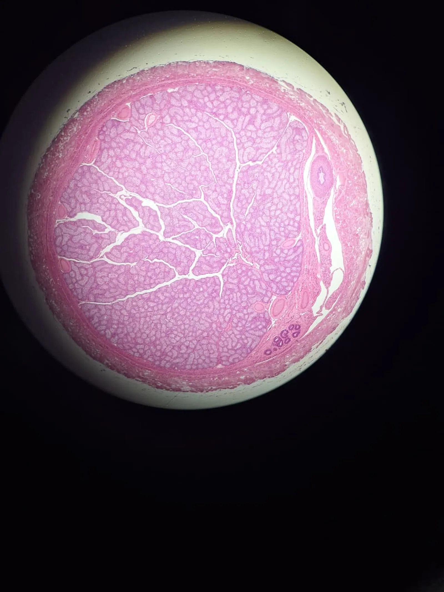

Lâmina 77 · Sistema reprodutor
Pênis

Toque na imagem para ampliar. No computador, use as setas do teclado para trocar de imagem.
Lâmina 77 · Sistema reprodutor

Toque na imagem para ampliar. No computador, use as setas do teclado para trocar de imagem.